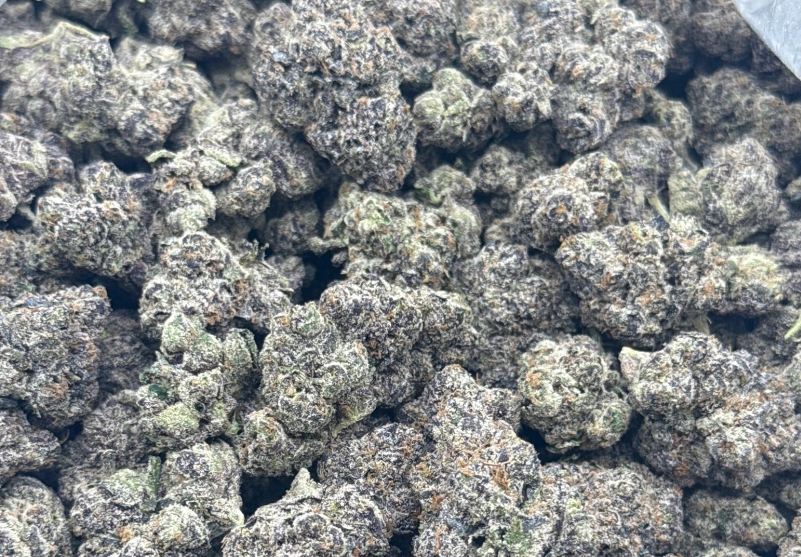
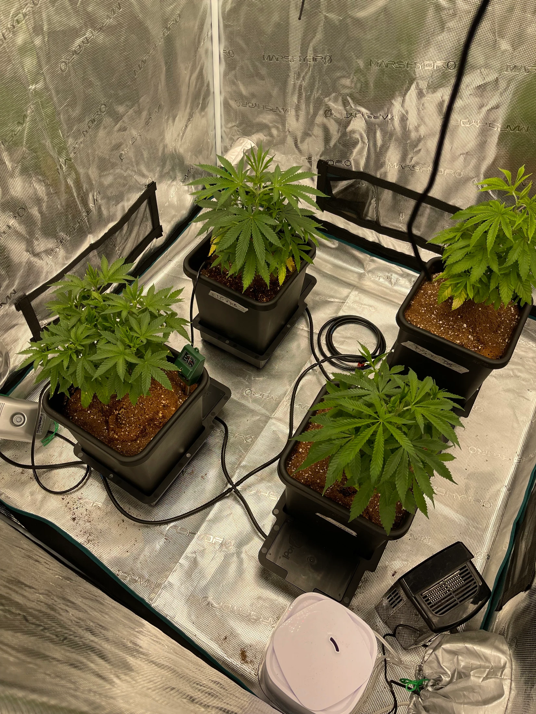
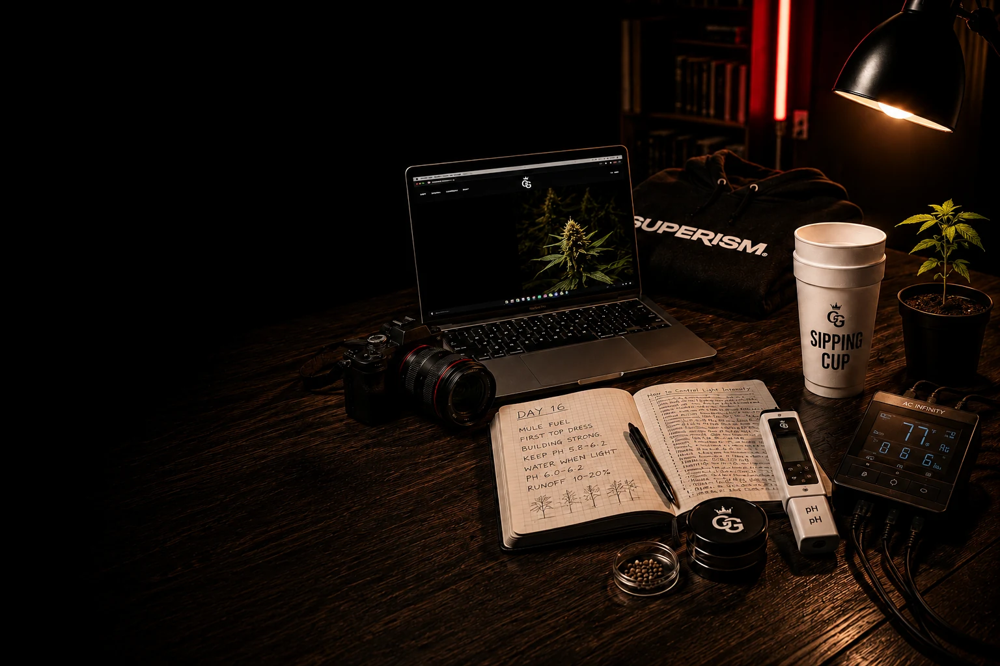
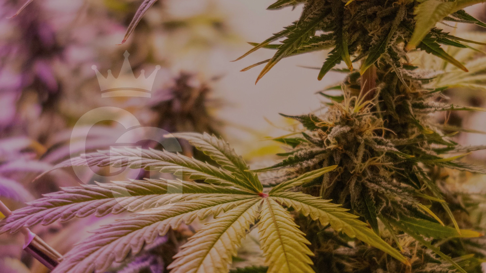

Website Version 3 Complete
The main pages now connect products, journal entries, and community features into one ecosystem.
Grow Godz Community
The central hub for Grow Godz growers, challenges, community recognition, featured submissions, and the culture being built around the plant.
Weekly Build Notes
A compact community status board that can be updated each week as the brand, grow, and community move forward.
The main pages now connect products, journal entries, and community features into one ecosystem.
The Build, Documented now tracks cultivation, packaging, community, and the Grow Godz origin story.
August is focused on clean grow setups, smart organization, and rooms that show real discipline.
Latest cultivation notes and visual progress are documented in the Journal as the build continues.
Labels, bottle direction, posters, and product presentation are being shaped into a premium system.
Community Spotlight
A curated feature for a standout member of the Grow Godz community. This is where the story behind the setup matters as much as the final photo.

Community Showcase
The permanent home for community submissions. Each card is built to be replaced with a real grow, harvest, setup, reel, or fresh submission.
Weekly Feature
One standout grow selected for plant health, cultivation skill, consistency, and community impact.
Submit Your Grow ->
Harvests
Beautiful flower, unique genetics, strong finish work, and successful harvests deserve a permanent showcase.
Submit Harvest ->
Setups
Clean tents, dialed rooms, thoughtful equipment layouts, and setups that help other growers learn.
Share Your Setup ->
Videos
Short videos of grows, harvests, training, time lapses, and behind-the-scenes community moments.
Submit Video ->
Fresh Drop
The newest approved submission will live here, making the Garden feel current without changing the section design.
Send Yours ->Monthly Grow Challenge
Show us your cleanest grow setup.
Submit a clear photo or short video of your grow setup. Clean layouts, smart organization, healthy plants, and useful details matter.
Follow @grow.godz, post your setup, tag @grow.godz, and use #GrowGodz. Email submissions are also accepted.
August 31, 2026 at 11:59 PM ET. The deadline text can be updated each month without changing the layout.
Manual Recognition System
Badges are manually awarded by Grow Godz for real community participation, strong submissions, standout moments, and lasting impact. No login, backend, or automated scoring is active yet.
Earned by early community members who help shape the Grow Godz ecosystem.
Awarded when a grower sends their first approved grow, setup, harvest, or reel.
Given to weekly grows selected for health, consistency, execution, and visual impact.
Awarded to the monthly challenge winner after community and Grow Godz review.
Reserved for exceptional harvest submissions with standout finish and presentation.
For growers who contribute useful comments, questions, feedback, and lessons.
The highest badge, reserved for exceptional members with lasting community recognition.
Permanent Recognition
Hall of Fame is different from Grow of the Week. Only exceptional community members and submissions stay here until replaced.
Reserved for a grow that represents the highest standard of health, structure, and consistency.
Reserved for a harvest with standout finish, visual quality, and documented grow work.
Reserved for a clean, efficient, inspiring setup that other growers can learn from.
Reserved for a member whose participation, support, and submissions strengthen the community.
Future Platform
These features are planned as future layers of the community. They are intentionally not active yet, so the current site stays simple, fast, and GitHub Pages compatible.
Grower pages, badges, and submission history.
Curated discussion below grows, challenges, and stories.
Simple reactions for community support and discovery.
Community leaderboards for growers, setups, and challenges.
Progression tied to verified participation and recognition.
How To Get Featured
Grow Godz highlights the best growers, setups, harvests, stories, and lessons. Whether you're a beginner or a seasoned cultivator, your work deserves to be seen.
Follow Grow Godz on Instagram to stay connected with the community.
Share your setup, harvest, training, progress photos, or videos.
Grow Godz reviews public posts, tags, emails, and future site submissions manually.
Approved submissions may appear in the Community Garden, Spotlight, Challenge, or Hall of Fame.
Connect
The Community page is built to showcase growers, document challenges, recognize participation, and prepare the platform for future profiles, comments, rankings, and XP.